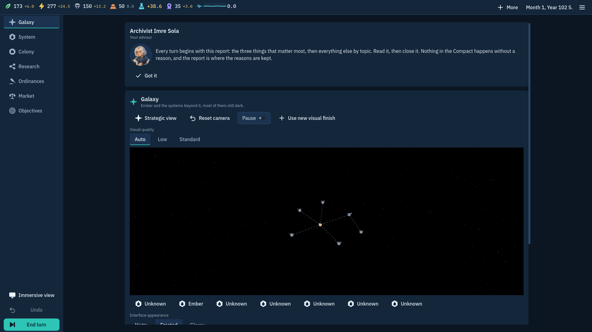
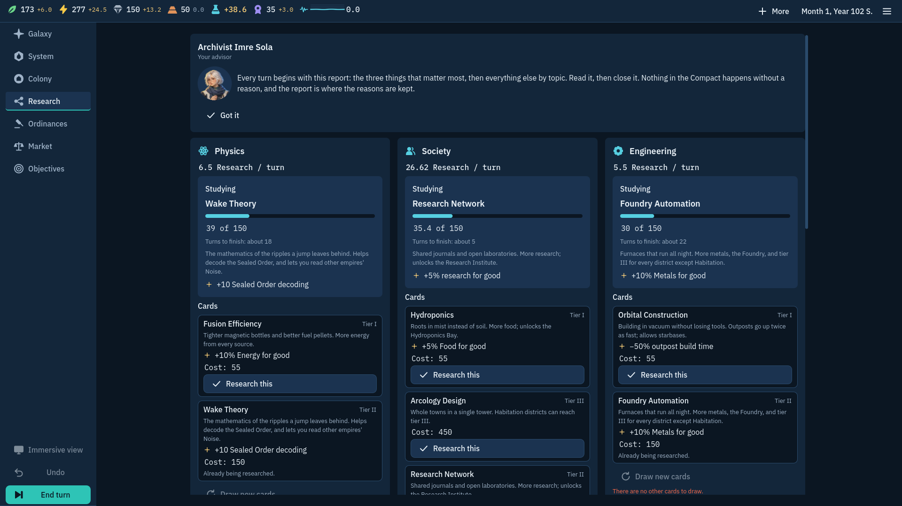
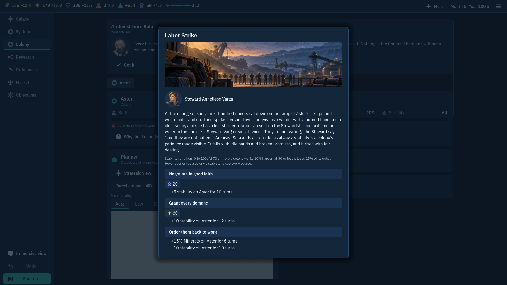

Before · current public page
Current presentation
It leads with “A hopeful frontier” and concept art. The current game has a 3D immersive colony scene, but this page does not show it.
Visual proposal · updated 26 October 2026
A refresh for /hearth.html that keeps the mariyaholic-98 frame and puts the current 3D game view at the centre. The published portfolio page remains unchanged while this local proposal is reviewed.
Before · current public page
It leads with “A hopeful frontier” and concept art. The current game has a 3D immersive colony scene, but this page does not show it.
After · page direction
Turn-based colony strategy · in development
Lead a frontier settlement from orbit to the colony floor. Explore a 3D terrain, place buildings, and shape what your people can build next.
LIVE WEB BUILD · 3D VIEWThe live build takes the hero position so visitors can enter the current game. The embed opens at its normal start point; after “First orders” is dismissed, the colony scene loads in 3D.
These real desktop captures come from the screenshot bundle for run 40157308704. They show the current navigation map, research cards, and event writing. The bundle does not contain a frozen 3D colony image, so the live embed above remains the only 3D scene proof.



c280f71c069bd6a159c6ae1908e3e448b9819d92 · screens artifact SHA-256 451d6076e790e0e9ba407b391e0c69697ba67d0290a66eb88d437392343c245b. Open the screenshot run ↗